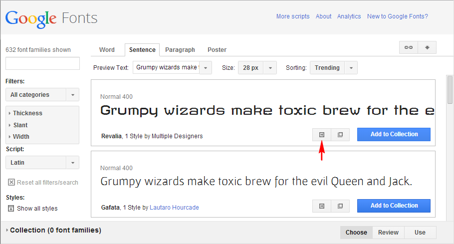
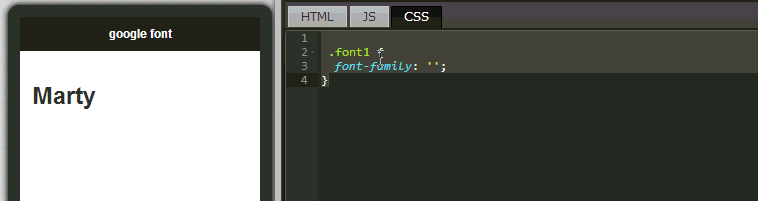

Basic component hands-on practice - Using Google fonts
Whether it is about a web page or an app, even a document, presentation, spreadsheet and others, you will always encounter a same topic: fonts. Even if we have installed thousands of fonts on our own computers, to publish on the web or package an installation file can still be very complicated and troublesome.
Fortunately, as the technology advances, providers such as Google offer a large amount of fonts for users to link to directly and freely. Just specify the special fonts in CSS, and then you can see the same fonts wherever you are around the world as long as you are connected to the Internet. Isn't this quite convenient? Because EZoApp uses CSS' style sheet to construct styles, it also supports open fonts. This chapter will focus on explaining how to use Google Fonts.
Link of example:
Basic component hands-on practice - using Google fonts
Here, we also provide a few good public fonts websites for everyone to use:
Google Fonts (The most popular public fonts website on the Internet)
Adobe® Edge Web Fonts (Online public fonts published by Adobe)
Open Font Library (Sources of overseas online public fonts)
I. Loading Google Fonts
First, we need to connect to Google Fonts website and use the font links it provides to load the fonts into our CSS files. After you connect to Google Fonts, you can see the large amount of free fonts provided by Google. When you find the font that you want to use, click the "Quick-use" and you will see related instructions on how to link and use the font.
Click to choose font. On the next page, scroll down and you will see "3. Add this code to your website:". We choose "@import" which will load the font into CSS' program code.

Copy this program code. Then, go back to EZoApp's CSS editing screen and paste it at the very top. Now, we are ready to use this set of fonts! (Note: if network connection is not available, default fonts will be used automatically.)
II. Using Google Fonts
Open EZoApp's editing screen. Paste the program code just copied. Next, add the title of the font in the style where we need to use this set of fonts. Then, in the editing area, we can immediately see that the font is using Google Fonts. Isn't it very convenient and useful?
Of course, you do not have to choose Google Fonts. You can also use your own fonts. The drawbacks are that you need to put the fonts in your own space on the Web, and that there might be related copyright issues. Therefore, you could just use the free and authorized public fonts provided by the big companies! (However, Chinese fonts are rarely used by anyone even if they are public fonts. After all, a Chinese font set could be larger than 5MB. Users might not have the patience to wait for the download of such a big file.)
How to use your own fonts:
@font-face {
font-family: "font-name";
src: url("http://xxx.com/abc.ttf");
}
Link of example:
Basic component hands-on practice - using Google fonts